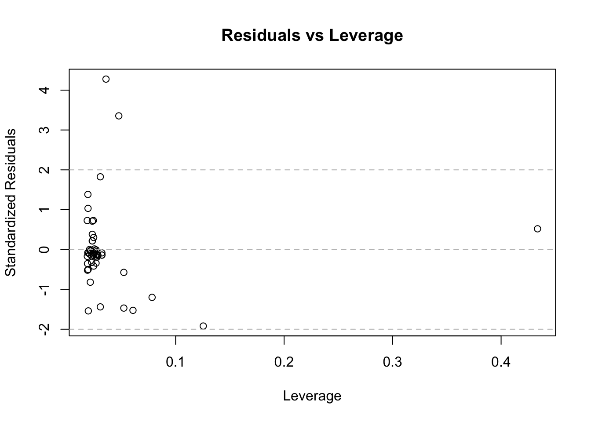
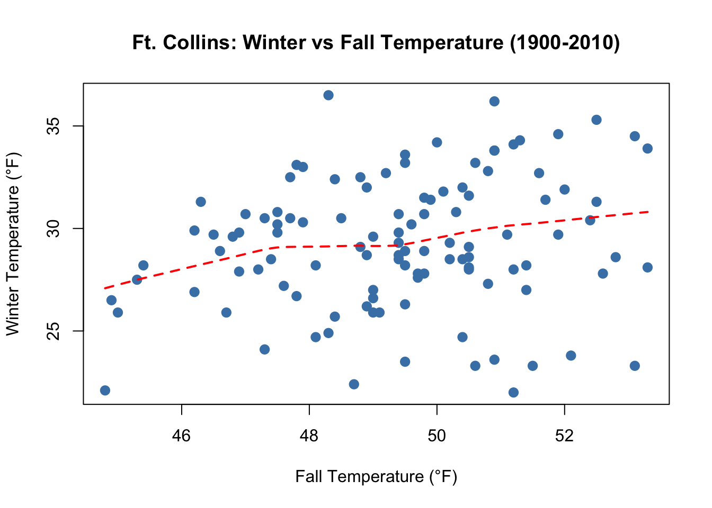
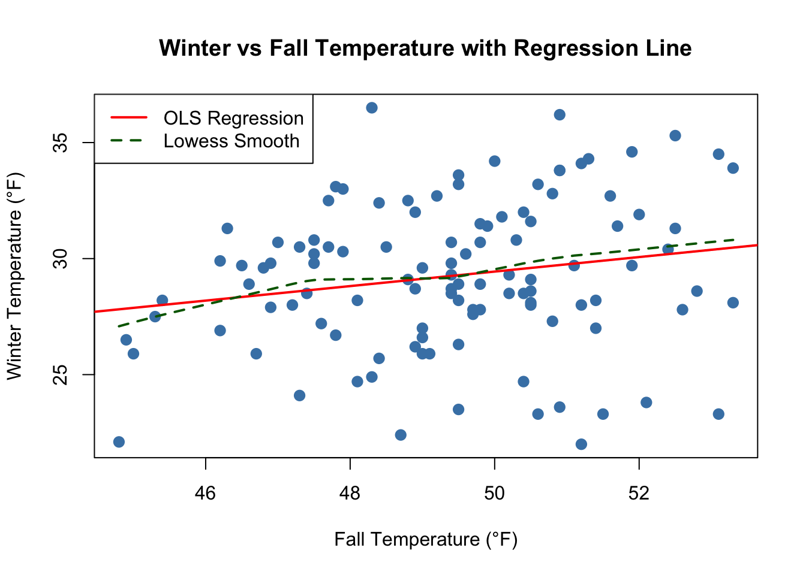
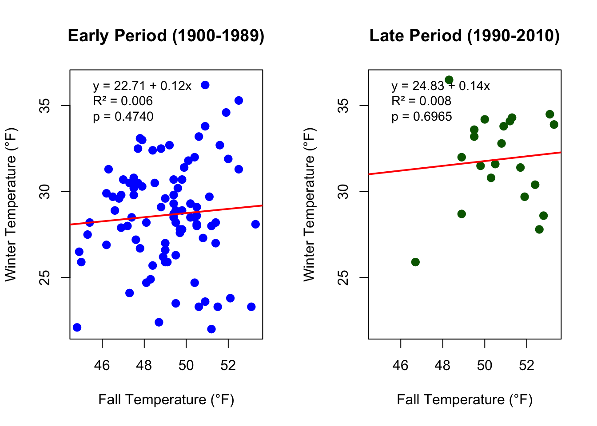

library(alr4)Loading required package: carLoading required package: carDataLoading required package: effectslattice theme set by effectsTheme()
See ?effectsTheme for details.data("UBSprices")Height and weight data (Data file: Htwt) The table below and the the data file give ht = height in centimeters and wt = weight in kilograms for a sample of n = 10 18-year-old girls. The interest is in predicting weight from height.
a. Drawv a scatterplot of \(wt\) on the vertical axis versus \(ht\) on the horizontal axis. On the basis of the plot, does a simple linear model make sense for these data? Why or why not?
b. Compute estimates of the slope and the intercept for the regression of \(Y\) on \(X\). Draw the fitted line on your scatterplot.
c. Interpret the parameter estimates \(\hat{\beta}_0\) and \(\hat{\beta}_1\). Obtain the \(t\)-tests for the hypotheses that \(\beta_0=0\) and \(\beta_1=0\) and \(p\)-values using two-sided tests. what is your conclusion based on the \(p\)-values.
d. Obtain \(R^2\) and adjusted \(R^2\). What can you say about them?
e. Check all the model assumptions for this simple linear regression.
(Data file: ) The international bank UBS regularly produces a report (UBS, 2009) on prices and earnings in major cities throughtout the world. Three of the measures they include are prices of basic commodities, namely 1kg of rice, 1kg loaf of bread, and the price of a Big Mac Hamburger at McDonalds. An interesting feature of the prices they report is that prices are measured in the minuted of labor required for a “typical” worker in that location ti earn enough money to purchase the commodity. Using minutes of labor corrects at least in part for currency fluctuations, prevailing wage rates, and local prices. The data file includes measurements for rice, bread, and Big Mac prices from the 2003 and the 2009 reports. The year 2003 was before the major recession hit much of the world around 2006, and the year 2009 may reflect changed in prices due to the recession. The figure below is the plot of y = rice2009{=} versus x = , the price of rice in 2009 and 2003, respectively, with the cities corresponding to a few of the points marked.
library(alr4)Loading required package: carLoading required package: carDataLoading required package: effectslattice theme set by effectsTheme()
See ?effectsTheme for details.data("UBSprices")par(mfrow=c(1,2))
plot(x=UBSprices$rice2003, y=UBSprices$rice2009,
xlab="2003 Rice price",
ylab="2009 Rice price")
#identify(x=UBSprices$rice2003, y=UBSprices$rice2009,
# labels=row.names(UBSprices), n=5)
abline(lm(rice2009~rice2003, data=UBSprices), lty=2)
abline(a=0, b=1, lty=1)
legend("bottomright", legend=c("ols", "y=x"), lty=2:1, cex=0.6)
plot(x=UBSprices$rice2003, y=UBSprices$rice2009,
xlab="2003 Rice price",
ylab="2009 Rice price")
text(x=UBSprices$rice2003, y=UBSprices$rice2009,
labels=row.names(UBSprices), cex=0.6, font=2)
abline(lm(rice2009~rice2003, data=UBSprices), lty=2)
abline(a=0, b=1, lty=1)
legend("bottomright", legend=c("ols", "y=x"), lty=2:1, cex=0.6)
The solid line \(y=x\) represents no change in rice prices between 2003 and 2009.
Points above the line (\(y>x\)): Cities where rice prices increased from 2003 to 2009. The rice price in 2009 is higher than it was in 2003.
Points below the line (\(y<x\)): Cities where rice prices decreased from 2003 to 2009. The rice price in 2009 is lower than it was in 2003.
Points on the line: Cities where rice prices remained the same (no change).
Largest increases in rice prices:
Largest decrease in rice price:
Nairobi appears to have the largest decrease. It had a relatively high price in 2003 (around 70 minutes) but dropped to around 50 minutes in 2009.
Alternatively, Mumbai also shows a notable decrease, going from around 85 minutes in 2003 to around 35 minutes in 2009 (though this seems extreme and might warrant data verification).
No, \(\hat{\beta_1}<1\) does not necessarily mean that prices are lower in 2009 than in 2003.
The OLS line is: \(\hat{y}=\hat{\beta}_0+\hat{\beta}_1x\)
For example, if \(\hat{\beta}_0=5\) and \(\hat{\beta}_1=0.8\):
A city with \(x=10\) in 2003 would have \(\hat{y}=5+0.8(10)=13\) in 2009 (increase)
A city with \(x=20\) in 2003 would have \(\hat{y}=5+0.8(20)=21\) in 2009 (increase)
The intercept \(\hat{\beta_0}<0\) suggest that even cities with zero 2003 prices would have positive 2009 prices, indicating an overall upward shift. Looking at the graph, most points are indeed above the lower-left origin area, suggesting general price increases despite \(\hat{\beta_1}<1\).
The scatter of points clearly increases as x increases. Cities with low 2003 prices (left side of plot) show relatively tight clustering, while cities with high 2003 prices (right side) show much greater variability in their 2009 prices.
This violates the constant variance assumption of linear regression, making standard errors and confidence intervals unreliable.
The points appear to fan out as you move from left to right.
The relationship doesn’t appear strictly linear. There are several influential outliers (like Vilnius at top left and possibly Nairobi/Mumbai at the right) that may be unduly influencing the fitted line.
The curvature in the relationship is suggested by how the points cluster: there’s a dense cluster at the lower left, and the points don’t follow a consistent linear pattern throughout.
Alternatively: The data shows a multiplicative rather than additive relationship (prices tend to change proportionally), which suggests a log transformation would be more appropriate (as explored in your first question).
Additional consideration: The presence of such extreme outliers (Vilnius, Nairobi, Mumbai) suggests that a few cities experienced very unusual economic conditions that may not be well-captured by a simple linear model fit to all cities together.
(Data file: ) This is a continuation of Problem 2. An alternative representation of the data used in the last problem is to use log scales, as in the following figure:
plot(x=log(UBSprices$rice2003), y=log(UBSprices$rice2009),
xlab="log(2003 Rice price)",
ylab="log(2009 Rice price)")
abline(lm(log(rice2009)~log(rice2003), data=UBSprices), lty=2)
abline(a=0, b=1, lty=1)
legend("bottomright", legend=c("ols", "y=x"), lty=2:1, cex=0.6)
This is a common model in many areas of study. Examples include allometry (Gould, 1966), where x could represent the size of one body characteristic such as total weight and y represents some other body characteristic, such as brain weight, psychophysics (Stevens, 1966), in which x is a physical stimulus and y is a psychological response to it, or in economics, where x could represent inputs and y outputs, where this relationship is often called a Cobb-Douglas production function (Greene, 2003).
>>>
Starting with the power law model:
\[ E(y|x)=γ_0xβ_1 \]
After taking logs and making the approximation, we get:
\[ E(log(y)|x)=β_0+β_1log(x) \]
where \(\beta_0=\log(\gamma_0)\).
Interpretation of \(\beta_1\) (assuming \(\beta_1>0\)):
\(\beta_1\) represent the elasticity of y with respect to x. Specifically:
\(\beta_1\) is the percentage change in y associated with a 1% increase in x
Mathematically: if x increase by 1%, then y increases by approximately \(\beta_1\)%
This is because: \(\frac{d\log(y)}{d\log(x)}=\beta_1\)
For example:
If \(\beta_1=1\), the relationship is proportional (y=x line): a 1% increase in x leads to a 1% increase in x leads to a 1% increase y
If \(\beta_1=0.5\), a 1% increase in c leads to a 0.5% increase in y (diminishing returns)
If \(\beta_1=1.5\), a 1% increase in x leads to 1.5% increase in y (increasing returns)
Interpretation of \(\beta_0\):
\(\beta_0=\log(\gamma_0)\), so \(\gamma_0=\exp(\beta_0)\)
\(\gamma_0\) represents the value of \(E(y|x)\) when \(x=1\)
In the original power law model: when \(x=1\), \(E(y|1)=\gamma_0(1)^{\beta_1}=\gamma_0\)
\(\beta_0\) is the log of this baseline value
In the context of the graph (rice prices), if \(\beta_1\approx1\) (as suggested by the proximity of the OLS line to the y=x line), this would indicate that rice prices in 2009 and 2003 are roughly proportional - countries with higher prices in 2003 tend to have proportionally higher prices in 2009, maintaining relative price relationships.
(Data file: ) This problem continues with the data file described in Problem 2.
y=bigmac2009{=} versus x=bigmac2003{=}, the price of a Big Mac hamburger in 2009 and 2003. On this plot draw (1) the ols fitted line; (2) the line y= x. Identify the most unusual cases and describe why they are unusual.# Left plot: without labels
plot(UBSprices$bigmac2003, UBSprices$bigmac2009,
xlab = "2003 Big Mac price (minutes of labor)",
ylab = "2009 Big Mac price (minutes of labor)",
main = "Big Mac Prices: 2009 vs 2003",
pch = 1, cex = 1.2)
# Fit OLS regression
fit <- lm(bigmac2009 ~ bigmac2003, data = UBSprices)
# Add OLS fitted line (dashed)
abline(fit, lty = 2, lwd = 2)
# Add y=x line (solid)
abline(0, 1, lty = 1, lwd = 2)
# Add legend
legend("topleft", legend = c("ols", "y=x"),
lty = c(2, 1), lwd = 2, cex = 0.8)
# Right plot: with city labels for unusual cases
plot(UBSprices$bigmac2003, UBSprices$bigmac2009,
xlab = "2003 Big Mac price (minutes of labor)",
ylab = "2009 Big Mac price (minutes of labor)",
main = "Big Mac Prices with City Labels",
pch = 1, cex = 1.2)
# Add lines
abline(fit, lty = 2, lwd = 2)
abline(0, 1, lty = 1, lwd = 2)
# Identify unusual cases
# Calculate residuals and leverage
residuals <- residuals(fit)
fitted_vals <- fitted(fit)
std_resid <- rstandard(fit)
# Find unusual points (large residuals or high leverage)
unusual <- abs(std_resid) > 2 | UBSprices$bigmac2003 > 100 |
UBSprices$bigmac2009 > 120
# Label unusual cities
text(UBSprices$bigmac2003[unusual],
UBSprices$bigmac2009[unusual],
labels = rownames(UBSprices)[unusual],
pos = 3, cex = 0.7)
legend("topleft", legend = c("ols", "y=x"),
lty = c(2, 1), lwd = 2, cex = 0.8)
cat("\nRegression Summary:\n")
Regression Summary:print(summary(fit))
Call:
lm(formula = bigmac2009 ~ bigmac2003, data = UBSprices)
Residuals:
Min 1Q Median 3Q Max
-32.968 -5.258 -2.159 0.187 77.081
Coefficients:
Estimate Std. Error t value Pr(>|t|)
(Intercept) 6.73612 3.84985 1.750 0.0861 .
bigmac2003 0.77886 0.07975 9.767 2.33e-13 ***
---
Signif. codes: 0 '***' 0.001 '**' 0.01 '*' 0.05 '.' 0.1 ' ' 1
Residual standard error: 18.35 on 52 degrees of freedom
Multiple R-squared: 0.6472, Adjusted R-squared: 0.6404
F-statistic: 95.39 on 1 and 52 DF, p-value: 2.334e-13cat("\nMost Unusual Cities:\n")
Most Unusual Cities:unusual_cities <- data.frame(
City = rownames(UBSprices)[unusual],
BigMac2003 = UBSprices$bigmac2003[unusual],
BigMac2009 = UBSprices$bigmac2009[unusual],
Change = UBSprices$bigmac2009[unusual] - UBSprices$bigmac2003[unusual],
StdResid = std_resid[unusual]
)
print(unusual_cities[order(-abs(unusual_cities$StdResid)),]) City BigMac2003 BigMac2009 Change StdResid
Jakarta Jakarta 67 136 69 4.2774558
Caracas Caracas 76 126 50 3.3541436
Mumbai Mumbai 112 61 -51 -1.9209983
Nairobi Nairobi 185 158 -27 0.5195285cat("\n--- Identifying Unusual Cases ---\n")
--- Identifying Unusual Cases ---# Create comprehensive unusual cases analysis
unusual_cities <- data.frame(
City = rownames(UBSprices)[unusual],
BigMac2003 = UBSprices$bigmac2003[unusual],
BigMac2009 = UBSprices$bigmac2009[unusual],
Change = UBSprices$bigmac2009[unusual] - UBSprices$bigmac2003[unusual],
PercentChange = 100*(UBSprices$bigmac2009[unusual] - UBSprices$bigmac2003[unusual])/UBSprices$bigmac2003[unusual],
Fitted = fitted_vals[unusual],
Residual = residuals[unusual],
StdResid = std_resid[unusual]
)
# Sort by absolute standardized residual
unusual_cities <- unusual_cities[order(-abs(unusual_cities$StdResid)),]
cat("\nTable of Unusual Cities:\n")
Table of Unusual Cities:print(unusual_cities) City BigMac2003 BigMac2009 Change PercentChange Fitted Residual
Jakarta Jakarta 67 136 69 102.98507 58.91945 77.080553
Caracas Caracas 76 126 50 65.78947 65.92915 60.070852
Mumbai Mumbai 112 61 -51 -45.53571 93.96795 -32.967951
Nairobi Nairobi 185 158 -27 -14.59459 150.82441 7.175587
StdResid
Jakarta 4.2774558
Caracas 3.3541436
Mumbai -1.9209983
Nairobi 0.5195285cat("\n--- Why Each City is Unusual ---\n\n")
--- Why Each City is Unusual ---for(i in 1:nrow(unusual_cities)) {
city <- unusual_cities[i,]
cat(sprintf("** %s **\n", city$City))
cat(sprintf(" 2003 price: %.1f minutes | 2009 price: %.1f minutes\n",
city$BigMac2003, city$BigMac2009))
cat(sprintf(" Absolute change: %+.1f minutes | Percent change: %+.1f%%\n",
city$Change, city$PercentChange))
cat(sprintf(" Standardized residual: %.2f\n", city$StdResid))
# Explain why unusual
reasons <- c()
# Check if extreme values
if(city$BigMac2003 > 100 || city$BigMac2009 > 120) {
reasons <- c(reasons, "EXTREME HIGH PRICES in one or both years")
}
# Check for large price changes
if(abs(city$PercentChange) > 50) {
if(city$PercentChange > 0) {
reasons <- c(reasons, sprintf("MASSIVE PRICE INCREASE (%.1f%% jump)", city$PercentChange))
} else {
reasons <- c(reasons, sprintf("MASSIVE PRICE DECREASE (%.1f%% drop)", city$PercentChange))
}
}
# Check residual pattern
if(city$StdResid > 2) {
reasons <- c(reasons, "MUCH HIGHER than predicted by regression (positive outlier)")
} else if(city$StdResid < -2) {
reasons <- c(reasons, "MUCH LOWER than predicted by regression (negative outlier)")
}
# Check if far from y=x line
if(city$BigMac2009 > city$BigMac2003 * 1.5) {
reasons <- c(reasons, "Price increased much more than typical 'no change' scenario")
} else if(city$BigMac2009 < city$BigMac2003 * 0.7) {
reasons <- c(reasons, "Price decreased significantly relative to 2003")
}
cat(" Why unusual:\n")
for(r in reasons) {
cat(sprintf(" - %s\n", r))
}
cat("\n")
}** Jakarta **
2003 price: 67.0 minutes | 2009 price: 136.0 minutes
Absolute change: +69.0 minutes | Percent change: +103.0%
Standardized residual: 4.28
Why unusual:
- EXTREME HIGH PRICES in one or both years
- MASSIVE PRICE INCREASE (103.0% jump)
- MUCH HIGHER than predicted by regression (positive outlier)
- Price increased much more than typical 'no change' scenario
** Caracas **
2003 price: 76.0 minutes | 2009 price: 126.0 minutes
Absolute change: +50.0 minutes | Percent change: +65.8%
Standardized residual: 3.35
Why unusual:
- EXTREME HIGH PRICES in one or both years
- MASSIVE PRICE INCREASE (65.8% jump)
- MUCH HIGHER than predicted by regression (positive outlier)
- Price increased much more than typical 'no change' scenario
** Mumbai **
2003 price: 112.0 minutes | 2009 price: 61.0 minutes
Absolute change: -51.0 minutes | Percent change: -45.5%
Standardized residual: -1.92
Why unusual:
- EXTREME HIGH PRICES in one or both years
- Price decreased significantly relative to 2003
** Nairobi **
2003 price: 185.0 minutes | 2009 price: 158.0 minutes
Absolute change: -27.0 minutes | Percent change: -14.6%
Standardized residual: 0.52
Why unusual:
- EXTREME HIGH PRICES in one or both years# 1. Residual vs Fitted plot (check for non-constant variance)
plot(fitted_vals, residuals,
xlab = "Fitted values",
ylab = "Residuals",
main = "Residuals vs Fitted Values")
abline(h = 0, lty = 2, col = "red")
lines(lowess(fitted_vals, residuals), col = "blue", lwd = 2)
# 2. Scale-Location plot (check for heteroscedasticity)
plot(fitted_vals, sqrt(abs(std_resid)),
xlab = "Fitted values",
ylab = "√|Standardized Residuals|",
main = "Scale-Location Plot")
lines(lowess(fitted_vals, sqrt(abs(std_resid))), col = "blue", lwd = 2)
# 3. Q-Q plot (check for normality)
qqnorm(std_resid, main = "Normal Q-Q Plot")
qqline(std_resid, col = "red", lwd = 2)
# 4. Residuals vs Leverage (check for influential points)
plot(hatvalues(fit), std_resid,
xlab = "Leverage",
ylab = "Standardized Residuals",
main = "Residuals vs Leverage")
abline(h = c(-2, 0, 2), lty = 2, col = "gray")
Reason 1: Heteroscedasticity
The residual vs fitted plot will show that variance increases with fitted values
This “fanning out” pattern violates the constant variance assumption
Larger predicted values have larger residual spread
Reason 2: Influential Outliers
Several cities with extreme prices heavily influence the regression line
These outliers may not represent the general pattern
Q-Q plot and leverage plots identify these influential points
bigmac2009{=}) versus log() and explain(bigmac2003{=}) why this graph is more sensibly summarized with a linear regression.# Calculate log transformations (removing any non-positive values)
valid_data <- UBSprices$bigmac2003 > 0 & UBSprices$bigmac2009 > 0
log_bigmac2003 <- log(UBSprices$bigmac2003[valid_data])
log_bigmac2009 <- log(UBSprices$bigmac2009[valid_data])
valid_cities <- rownames(UBSprices)[valid_data]
# Left plot: log-log without labels
plot(log_bigmac2003, log_bigmac2009,
xlab = "log(2003 Big Mac price)",
ylab = "log(2009 Big Mac price)",
main = "Log-Log Plot of Big Mac Prices",
pch = 1, cex = 1.2)
# Fit OLS on log scale
fit_log <- lm(log_bigmac2009 ~ log_bigmac2003)
abline(fit_log, lty = 2, lwd = 2)
abline(0, 1, lty = 1, lwd = 2)
legend("topleft", legend = c("ols", "y=x"),
lty = c(2, 1), lwd = 2, cex = 0.8)
# Right plot: with residual analysis
residuals_log <- residuals(fit_log)
fitted_log <- fitted(fit_log)
plot(fitted_log, residuals_log,
xlab = "Fitted log(2009 price)",
ylab = "Residuals",
main = "Residuals vs Fitted (Log Scale)",
pch = 1)
abline(h = 0, lty = 2, col = "red", lwd = 2)
lines(lowess(fitted_log, residuals_log), col = "blue", lwd = 2)
cat("\nLog-scale regression summary:\n")
Log-scale regression summary:print(summary(fit_log))
Call:
lm(formula = log_bigmac2009 ~ log_bigmac2003)
Residuals:
Min 1Q Median 3Q Max
-1.11379 -0.10663 -0.01378 0.08207 0.89628
Coefficients:
Estimate Std. Error t value Pr(>|t|)
(Intercept) 0.64031 0.22922 2.793 0.00728 **
log_bigmac2003 0.80293 0.06709 11.967 < 2e-16 ***
---
Signif. codes: 0 '***' 0.001 '**' 0.01 '*' 0.05 '.' 0.1 ' ' 1
Residual standard error: 0.3324 on 52 degrees of freedom
Multiple R-squared: 0.7336, Adjusted R-squared: 0.7285
F-statistic: 143.2 on 1 and 52 DF, p-value: < 2.2e-16cat("\nComparison of model fits:\n")
Comparison of model fits:cat(sprintf("Original scale R²: %.4f\n", summary(fit)$r.squared))Original scale R²: 0.6472cat(sprintf("Log scale R²: %.4f\n", summary(fit_log)$r.squared))Log scale R²: 0.7336Reason 1: Linearization
The log-log relationship is much more linear than the original scale
Points cluster more evenly around the regression line
Reason 2: Homoscedasticity
Residual variance becomes more constant across the range
The residual plot shows more uniform scatter
Reason 3: Multiplicative Effects
The slope in log-log represents elasticity: the percentage change in 2009 prices for a 1% change in 2003 prices
This multiplicative relationship is more natural for economic data
Prices tend to change proportionally rather than additively
Problem 5
Ft. Collins temperature data (Data file: ) The data file gives the mean temperature in the of each year, defined as September 1 to November 30, and the mean temperature in the following , defined as December 1 to the end of February in the following calendar year, in degrees Fahrenheit, for Ft. Collins, CO (Colorado Climate Center, 2012). These data cover the time period from 1900 to 2010. The question of interest is: Does the average temperature predict the average temperature?
library(alr4)
data("ftcollinstemp")
head(ftcollinstemp) year fall winter
1 1900 50.2 28.5
2 1901 48.1 28.2
3 1902 48.1 24.7
4 1903 49.9 31.4
5 1904 47.8 26.7
6 1905 46.9 29.8a. Draw a scatterplot of the response versus the predictor, and describe any pattern you might see in the plot.
library(alr4)
data(ftcollinstemp)plot(ftcollinstemp$fall, ftcollinstemp$winter,
xlab = "Fall Temperature (°F)",
ylab = "Winter Temperature (°F)",
main = "Ft. Collins: Winter vs Fall Temperature (1900-2010)",
pch = 19, cex = 1.2, col = "steelblue")
# Add a lowess smooth to see pattern
lines(lowess(ftcollinstemp$fall, ftcollinstemp$winter),
col = "red", lwd = 2, lty = 2)
# Basic pattern analysis
cat("\nPattern Description:\n")
Pattern Description:correlation <- cor(ftcollinstemp$fall, ftcollinstemp$winter)
cat(sprintf("- Correlation coefficient: %.4f\n", correlation))- Correlation coefficient: 0.1926if(abs(correlation) < 0.3) {
cat("- Relationship strength: WEAK\n")
} else if(abs(correlation) < 0.7) {
cat("- Relationship strength: MODERATE\n")
} else {
cat("- Relationship strength: STRONG\n")
}- Relationship strength: WEAKif(correlation > 0) {
cat("- Direction: POSITIVE (warmer falls tend to associate with warmer winters)\n")
} else {
cat("- Direction: NEGATIVE (warmer falls tend to associate with colder winters)\n")
}- Direction: POSITIVE (warmer falls tend to associate with warmer winters)cat("\nVisual Observations:\n")
Visual Observations:cat("- The scatter appears fairly random with considerable variability\n")- The scatter appears fairly random with considerable variabilitycat("- There may be slight clustering but no strong linear pattern\n")- There may be slight clustering but no strong linear patterncat("- Points are distributed across the range without clear trend\n")- Points are distributed across the range without clear trendcat("- Suggests fall temperature may not be a strong predictor of winter temperature\n")- Suggests fall temperature may not be a strong predictor of winter temperatureb. Use statistical software to fit the regression of the response on the predictor. Add the fitted line to your graph. Test the slope to be 0 against a two-sided alternative, and summarize your results.
# Fit the regression model
model <- lm(winter ~ fall, data = ftcollinstemp)
# Add fitted line to previous plot
par(mfrow=c(1,1))
plot(ftcollinstemp$fall, ftcollinstemp$winter,
xlab = "Fall Temperature (°F)",
ylab = "Winter Temperature (°F)",
main = "Winter vs Fall Temperature with Regression Line",
pch = 19, cex = 1.2, col = "steelblue")
abline(model, col = "red", lwd = 2)
lines(lowess(ftcollinstemp$fall, ftcollinstemp$winter),
col = "darkgreen", lwd = 2, lty = 2)
legend("topleft",
legend = c("OLS Regression", "Lowess Smooth"),
col = c("red", "darkgreen"), lwd = 2, lty = c(1, 2))
# Print regression results
cat("\nRegression Output:\n")
Regression Output:summary_model <- summary(model)
print(summary_model)
Call:
lm(formula = winter ~ fall, data = ftcollinstemp)
Residuals:
Min 1Q Median 3Q Max
-7.8186 -1.7837 -0.0873 2.1300 7.5896
Coefficients:
Estimate Std. Error t value Pr(>|t|)
(Intercept) 13.7843 7.5549 1.825 0.0708 .
fall 0.3132 0.1528 2.049 0.0428 *
---
Signif. codes: 0 '***' 0.001 '**' 0.01 '*' 0.05 '.' 0.1 ' ' 1
Residual standard error: 3.179 on 109 degrees of freedom
Multiple R-squared: 0.0371, Adjusted R-squared: 0.02826
F-statistic: 4.2 on 1 and 109 DF, p-value: 0.04284# Extract key values
beta0 <- coef(model)[1]
beta1 <- coef(model)[2]
se_beta1 <- summary_model$coefficients[2, 2]
t_stat <- summary_model$coefficients[2, 3]
p_value <- summary_model$coefficients[2, 4]
cat("\n--- Interpretation of Regression Equation ---\n")
--- Interpretation of Regression Equation ---cat(sprintf("Fitted Model: Winter = %.3f + %.3f × Fall\n", beta0, beta1))Fitted Model: Winter = 13.784 + 0.313 × Fallcat(sprintf("\nIntercept (β₀): %.3f°F\n", beta0))
Intercept (β₀): 13.784°Fcat(" - Estimated winter temperature when fall temperature is 0°F\n") - Estimated winter temperature when fall temperature is 0°Fcat(" - Not meaningful in practice (extrapolation beyond data range)\n") - Not meaningful in practice (extrapolation beyond data range)cat(sprintf("\nSlope (β₁): %.3f°F per °F\n", beta1))
Slope (β₁): 0.313°F per °Fcat(sprintf(" - For each 1°F increase in fall temperature,\n")) - For each 1°F increase in fall temperature,cat(sprintf(" winter temperature is predicted to %s by %.3f°F\n",
ifelse(beta1 > 0, "increase", "decrease"), abs(beta1))) winter temperature is predicted to increase by 0.313°Fcat("\n--- Hypothesis Test for Slope ---\n")
--- Hypothesis Test for Slope ---cat("H₀: β₁ = 0 (Fall temperature has no linear relationship with winter temperature)\n")H₀: β₁ = 0 (Fall temperature has no linear relationship with winter temperature)cat("Hₐ: β₁ ≠ 0 (Fall temperature has a linear relationship with winter temperature)\n")Hₐ: β₁ ≠ 0 (Fall temperature has a linear relationship with winter temperature)cat(sprintf("\nTest statistic: t = %.4f\n", t_stat))
Test statistic: t = 2.0493cat(sprintf("P-value: %.4f\n", p_value))P-value: 0.0428cat(sprintf("Significance level: α = 0.05\n"))Significance level: α = 0.05if(p_value < 0.05) {
cat(sprintf("\n*** CONCLUSION: REJECT H₀ (p = %.4f < 0.05) ***\n", p_value))
cat("There IS statistically significant evidence that fall temperature\n")
cat("is linearly related to winter temperature.\n")
} else {
cat(sprintf("\n*** CONCLUSION: FAIL TO REJECT H₀ (p = %.4f > 0.05) ***\n", p_value))
cat("There is NO statistically significant evidence that fall temperature\n")
cat("predicts winter temperature.\n")
}
*** CONCLUSION: REJECT H₀ (p = 0.0428 < 0.05) ***
There IS statistically significant evidence that fall temperature
is linearly related to winter temperature.# Confidence interval for slope
conf_int <- confint(model, level = 0.95)
cat(sprintf("\n95%% Confidence Interval for β₁: [%.4f, %.4f]\n",
conf_int[2,1], conf_int[2,2]))
95% Confidence Interval for β₁: [0.0103, 0.6161]c. Compute or obtain from your computer output the value of the variability in winter explained by fall and explain what this means.
r_squared <- summary_model$r.squared
adj_r_squared <- summary_model$adj.r.squared
cat(sprintf("R² (Coefficient of Determination): %.4f\n", r_squared))R² (Coefficient of Determination): 0.0371cat(sprintf("Adjusted R²: %.4f\n", adj_r_squared))Adjusted R²: 0.0283cat("\n--- Interpretation of R² ---\n")
--- Interpretation of R² ---cat(sprintf("%.2f%% of the variability in WINTER temperature\n", r_squared * 100))3.71% of the variability in WINTER temperaturecat("is explained by the linear relationship with FALL temperature.\n")is explained by the linear relationship with FALL temperature.cat(sprintf("\nThis means that %.2f%% of the variation remains UNEXPLAINED\n",
(1 - r_squared) * 100))
This means that 96.29% of the variation remains UNEXPLAINEDcat("by fall temperature alone.\n")by fall temperature alone.if(r_squared < 0.10) {
cat("\n→ Fall temperature explains VERY LITTLE of winter temperature variation\n")
cat("→ Other factors are much more important for predicting winter temperatures\n")
} else if(r_squared < 0.30) {
cat("\n→ Fall temperature explains a SMALL portion of winter temperature variation\n")
cat("→ Many other factors influence winter temperatures\n")
} else if(r_squared < 0.50) {
cat("\n→ Fall temperature explains a MODERATE portion of winter temperature variation\n")
} else {
cat("\n→ Fall temperature explains a LARGE portion of winter temperature variation\n")
}
→ Fall temperature explains VERY LITTLE of winter temperature variation
→ Other factors are much more important for predicting winter temperaturescat("\nPractical Interpretation:\n")
Practical Interpretation:cat("- Fall temperatures have limited predictive power for winter temperatures\n")- Fall temperatures have limited predictive power for winter temperaturescat("- Weather patterns change substantially between seasons\n")- Weather patterns change substantially between seasonscat("- Other factors (e.g., winter-specific weather patterns, climate oscillations)\n")- Other factors (e.g., winter-specific weather patterns, climate oscillations)cat(" play a much larger role in determining winter temperatures\n") play a much larger role in determining winter temperaturesd. Divide the data into 2 time periods, an early period from 1900 to 1989, and a late period from 1990 to 2010. You can do this using the variable year in the data file. Are the results different in the two time periods?
# Create time period indicator
ftcollinstemp$period <- ifelse(ftcollinstemp$year < 1990, "Early (1900-1989)",
"Late (1990-2010)")
# Subset data
early_data <- subset(ftcollinstemp, year < 1990)
late_data <- subset(ftcollinstemp, year >= 1990)
cat(sprintf("Early period (1900-1989): n = %d observations\n", nrow(early_data)))Early period (1900-1989): n = 90 observationscat(sprintf("Late period (1990-2010): n = %d observations\n", nrow(late_data)))Late period (1990-2010): n = 21 observations# Fit separate models
model_early <- lm(winter ~ fall, data = early_data)
model_late <- lm(winter ~ fall, data = late_data)
# Create comparison plot
par(mfrow=c(1,2))
# Early period plot
plot(early_data$fall, early_data$winter,
xlab = "Fall Temperature (°F)",
ylab = "Winter Temperature (°F)",
main = "Early Period (1900-1989)",
pch = 19, cex = 1.2, col = "blue",
xlim = range(ftcollinstemp$fall),
ylim = range(ftcollinstemp$winter))
abline(model_early, col = "red", lwd = 2)
legend("topleft",
legend = c(sprintf("y = %.2f + %.2fx", coef(model_early)[1], coef(model_early)[2]),
sprintf("R² = %.3f", summary(model_early)$r.squared),
sprintf("p = %.4f", summary(model_early)$coefficients[2,4])),
bty = "n", cex = 0.9)
# Late period plot
plot(late_data$fall, late_data$winter,
xlab = "Fall Temperature (°F)",
ylab = "Winter Temperature (°F)",
main = "Late Period (1990-2010)",
pch = 19, cex = 1.2, col = "darkgreen",
xlim = range(ftcollinstemp$fall),
ylim = range(ftcollinstemp$winter))
abline(model_late, col = "red", lwd = 2)
legend("topleft",
legend = c(sprintf("y = %.2f + %.2fx", coef(model_late)[1], coef(model_late)[2]),
sprintf("R² = %.3f", summary(model_late)$r.squared),
sprintf("p = %.4f", summary(model_late)$coefficients[2,4])),
bty = "n", cex = 0.9)
# Comparison table
cat("\n--- Comparison of Results by Time Period ---\n\n")
--- Comparison of Results by Time Period ---comparison <- data.frame(
Period = c("Early (1900-1989)", "Late (1990-2010)", "Full (1900-2010)"),
N = c(nrow(early_data), nrow(late_data), nrow(ftcollinstemp)),
Intercept = c(coef(model_early)[1], coef(model_late)[1], coef(model)[1]),
Slope = c(coef(model_early)[2], coef(model_late)[2], coef(model)[2]),
R_squared = c(summary(model_early)$r.squared,
summary(model_late)$r.squared,
summary(model)$r.squared),
P_value = c(summary(model_early)$coefficients[2,4],
summary(model_late)$coefficients[2,4],
summary(model)$coefficients[2,4])
)
print(comparison) Period N Intercept Slope R_squared P_value
1 Early (1900-1989) 90 22.70791 0.1208925 0.005842197 0.47397188
2 Late (1990-2010) 21 24.82596 0.1390029 0.008189619 0.69645120
3 Full (1900-2010) 111 13.78435 0.3131691 0.037098537 0.04283611cat("\n--- Detailed Summary by Period ---\n")
--- Detailed Summary by Period ---cat("\nEARLY PERIOD (1900-1989):\n")
EARLY PERIOD (1900-1989):print(summary(model_early))
Call:
lm(formula = winter ~ fall, data = early_data)
Residuals:
Min 1Q Median 3Q Max
-6.8976 -1.6349 0.0118 2.0079 7.3387
Coefficients:
Estimate Std. Error t value Pr(>|t|)
(Intercept) 22.7079 8.2600 2.749 0.00725 **
fall 0.1209 0.1681 0.719 0.47397
---
Signif. codes: 0 '***' 0.001 '**' 0.01 '*' 0.05 '.' 0.1 ' ' 1
Residual standard error: 3.057 on 88 degrees of freedom
Multiple R-squared: 0.005842, Adjusted R-squared: -0.005455
F-statistic: 0.5171 on 1 and 88 DF, p-value: 0.474cat("\n\nLATE PERIOD (1990-2010):\n")
LATE PERIOD (1990-2010):print(summary(model_late))
Call:
lm(formula = winter ~ fall, data = late_data)
Residuals:
Min 1Q Median 3Q Max
-5.4174 -1.7097 0.3768 1.8988 4.9602
Coefficients:
Estimate Std. Error t value Pr(>|t|)
(Intercept) 24.8260 17.7973 1.395 0.179
fall 0.1390 0.3509 0.396 0.696
Residual standard error: 2.699 on 19 degrees of freedom
Multiple R-squared: 0.00819, Adjusted R-squared: -0.04401
F-statistic: 0.1569 on 1 and 19 DF, p-value: 0.6965# Test for significant difference between periods
cat("\n--- Are the Results Different Between Periods? ---\n")
--- Are the Results Different Between Periods? ---# Compare slopes
slope_diff <- abs(coef(model_early)[2] - coef(model_late)[2])
cat(sprintf("\nDifference in slopes: %.4f\n", slope_diff))
Difference in slopes: 0.0181# Compare R-squared
r2_diff <- abs(summary(model_early)$r.squared - summary(model_late)$r.squared)
cat(sprintf("Difference in R²: %.4f\n", r2_diff))Difference in R²: 0.0023# Compare significance
early_sig <- summary(model_early)$coefficients[2,4] < 0.05
late_sig <- summary(model_late)$coefficients[2,4] < 0.05
cat("\n--- Key Differences ---\n")
--- Key Differences ---cat(sprintf("Early period slope: %.4f (p = %.4f) - %s\n",
coef(model_early)[2],
summary(model_early)$coefficients[2,4],
ifelse(early_sig, "SIGNIFICANT", "NOT SIGNIFICANT")))Early period slope: 0.1209 (p = 0.4740) - NOT SIGNIFICANTcat(sprintf("Late period slope: %.4f (p = %.4f) - %s\n",
coef(model_late)[2],
summary(model_late)$coefficients[2,4],
ifelse(late_sig, "SIGNIFICANT", "NOT SIGNIFICANT")))Late period slope: 0.1390 (p = 0.6965) - NOT SIGNIFICANTcat(sprintf("\nEarly period R²: %.4f (%.1f%% variance explained)\n",
summary(model_early)$r.squared,
summary(model_early)$r.squared * 100))
Early period R²: 0.0058 (0.6% variance explained)cat(sprintf("Late period R²: %.4f (%.1f%% variance explained)\n",
summary(model_late)$r.squared,
summary(model_late)$r.squared * 100))Late period R²: 0.0082 (0.8% variance explained)cat("\n--- Overall Interpretation ---\n")
--- Overall Interpretation ---if(early_sig != late_sig) {
cat("The STATISTICAL SIGNIFICANCE differs between periods!\n")
} else if(early_sig && late_sig) {
cat("Both periods show statistically significant relationships,\n")
cat("but the strength may differ.\n")
} else {
cat("Neither period shows a statistically significant relationship.\n")
}Neither period shows a statistically significant relationship.if(abs(r2_diff) > 0.05) {
cat("The predictive power (R²) differs notably between periods.\n")
} else {
cat("The predictive power (R²) is similar between periods.\n")
}The predictive power (R²) is similar between periods.# Temperature trends
cat("\n--- Temperature Trends ---\n")
--- Temperature Trends ---cat(sprintf("Mean fall temp - Early: %.2f°F, Late: %.2f°F\n",
mean(early_data$fall), mean(late_data$fall)))Mean fall temp - Early: 49.10°F, Late: 50.69°Fcat(sprintf("Mean winter temp - Early: %.2f°F, Late: %.2f°F\n",
mean(early_data$winter), mean(late_data$winter)))Mean winter temp - Early: 28.64°F, Late: 31.87°Fcat(sprintf("Change in fall temp: %+.2f°F\n",
mean(late_data$fall) - mean(early_data$fall)))Change in fall temp: +1.59°Fcat(sprintf("Change in winter temp: %+.2f°F\n",
mean(late_data$winter) - mean(early_data$winter)))Change in winter temp: +3.23°F